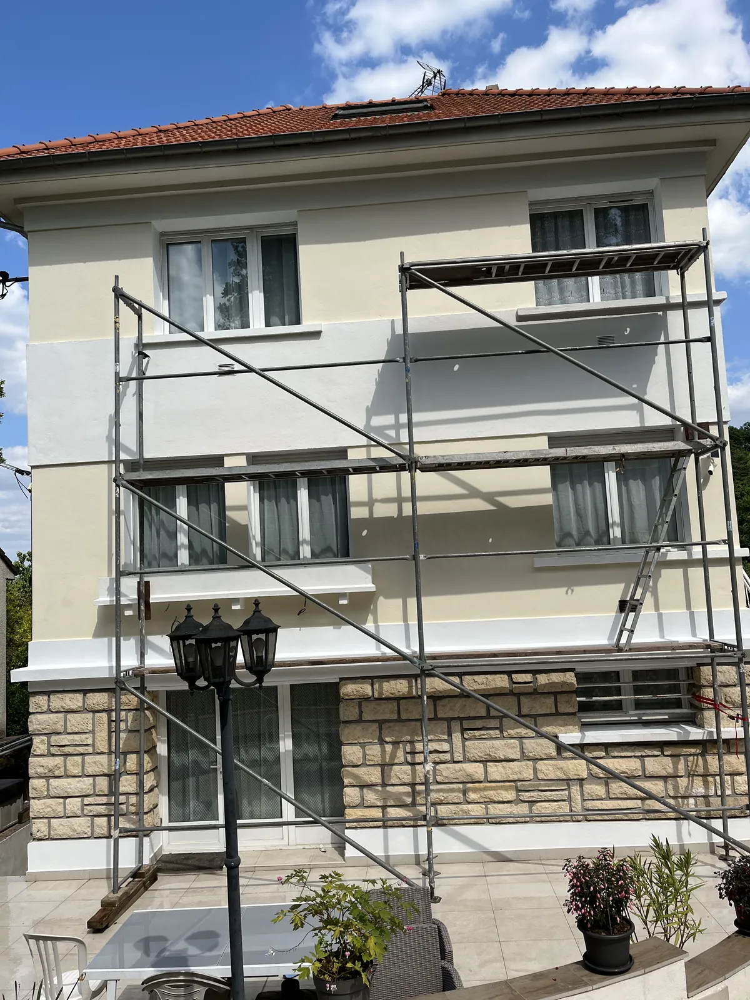
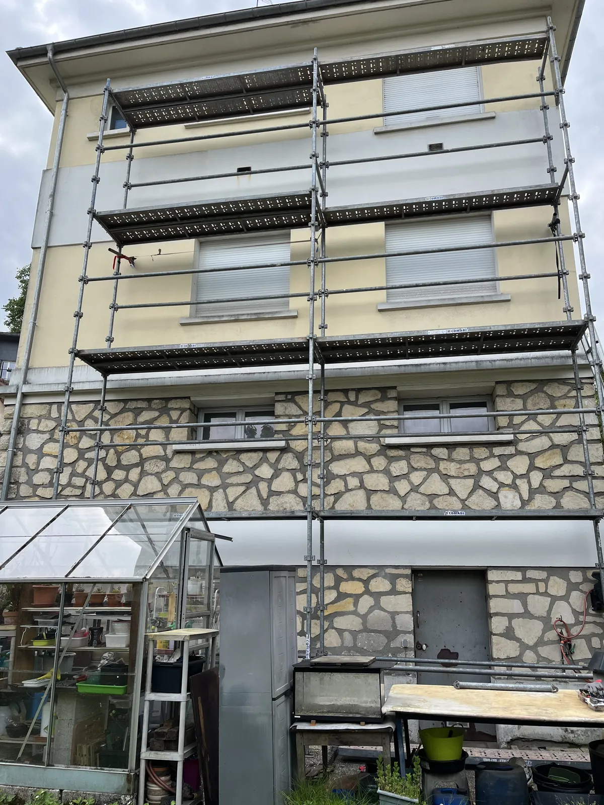
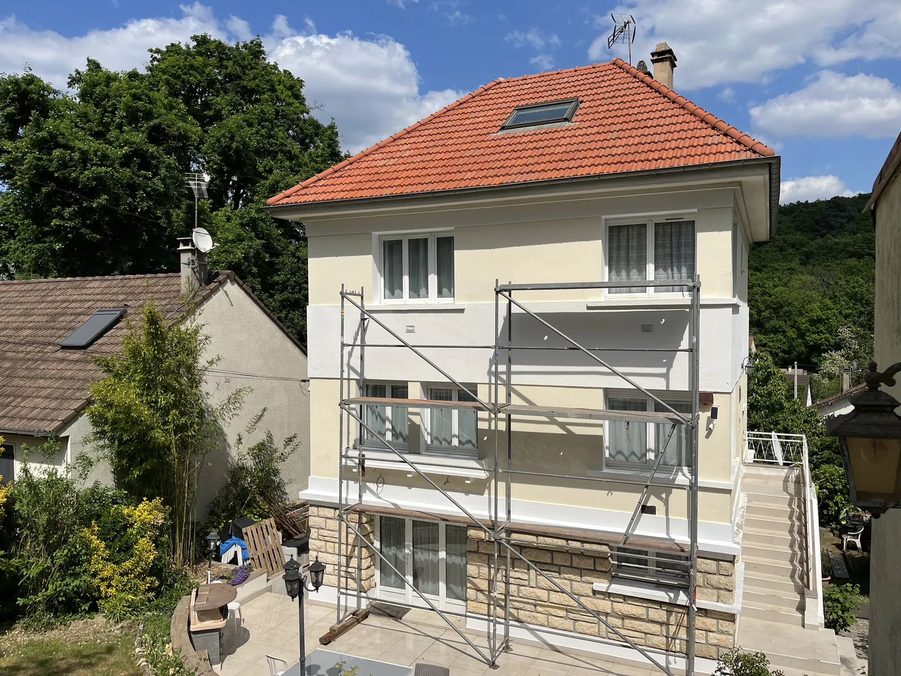
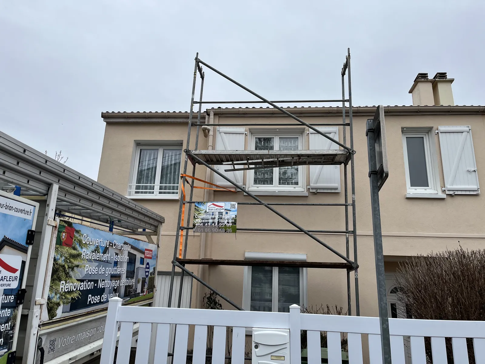
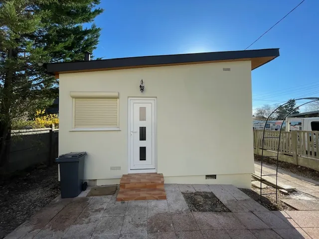

Brian Lafleur ravale et repeint les façades des maisons de l'Essonne et du sud des Hauts-de-Seine. Il a réalisé des ravalements à Massy, Antony, Wissous et Brétigny-sur-Orge. Toiture et façade peuvent se faire dans le même chantier. Devis gratuit sous 24h.
Une façade protège les murs de la pluie et du gel. Quand l'enduit se fissure ou se décolle, l'humidité rentre dans la maçonnerie. Un ravalement fait à temps coûte bien moins cher qu'une reprise de mur.
Mise en place de l'échafaudage, protection des fenêtres, des sols et des abords avant de commencer.
Nettoyage de la façade, ouverture et rebouchage des fissures, traitement des zones abîmées.
Application de l'enduit ou de la peinture de façade adaptée à votre mur, dans la teinte choisie.
Brian réalise aussi la peinture intérieure : murs, plafonds et boiseries.
Un échafaudage représente une part importante du prix d'un ravalement. Si votre toiture ou vos gouttières ont aussi besoin de travaux, les faire en même temps permet de ne le payer qu'une fois. C'est ce qui a été fait sur la maison de Wissous en photo : toiture en tuiles refaite et façade ravalée.
Selon votre commune, un ravalement qui modifie l'aspect de la façade peut demander une déclaration préalable de travaux en mairie. Brian vous le signale lors de la visite pour que votre chantier démarre dans les règles.





Vous expliquez votre besoin au 06 43 14 22 97 ou via le formulaire.
Brian vient sur place gratuitement et vous remet un devis clair sous 24h.
Les travaux démarrent à la date convenue, chantier bâché et tenu propre.
Vous faites le tour du chantier avec Brian. Couverture garantie décennale.
Au départ de Chilly-Mazarin, Brian Lafleur intervient dans les communes suivantes :
Déplacement et devis gratuits, réponse sous 24h, partout en Essonne et au sud du 92.